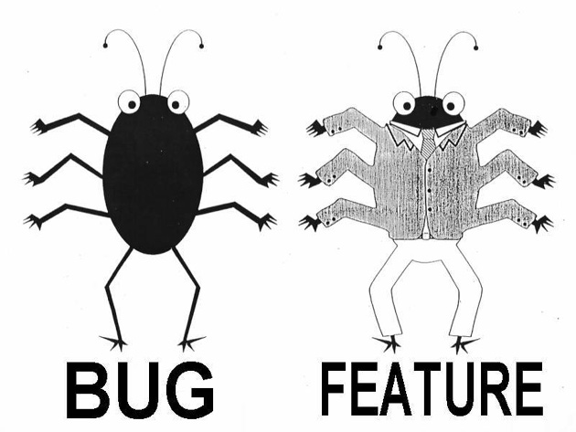

Python II

Revision 11.06.13
Introductions
-
Instructor Contact Info
-
Introductions
-
Any previous programming?
-
Why did you sign up?
-
Define success for you in this course
This Course
- Assumes programming concepts contained in Python I or equiv experience
- What it is:
- Python (2.7+ covered, 3+ optional)
- Topics: JSON, ReST client, PEP249 (DB-API), subprocess, decorators, threads/multiprocessing, ReST server
- What it’s not:
- Math or graphics
- Python internals
- Python frameworks
Ways to Run Python
- IPython is is recommended (http://ipython.org) (requires pyreadline)
- Also recommend running in a virtualenv sandbox for custom control of the environment.
- See the cheeseshop for package downloads (http://pypi.python.org)
virtualenv
- Creates an isolated python environment customized to your version and dependency requirements
- Comes with distribute, easy_install, and pip
- Allows control of environments where root authority is lacking
- Install and activate/deactivate:
- python virtualenv.py --distribute <new env>
- cd <new env>
- source bin/activate (or deactivate)
pip
- pip is the newest python package manager tool
- pip install <package name or package file>
- pip search <package name>
- Use --upgrade option for existing packages
Quick Review
#!/usr/bin/env python2
# -*- coding: utf-8 -*-
# Line #1 = shebang
# Line #2 = encoding declaration
Docstrings
Inline documentation
Import(s)
External code sources called modules
Statements
Python Keywords
and del from not while
as elif global or with
assert else if pass yield
break except import print
class exec in raise
continue finally is return
def for lambda try
Reserved for use by Python
tuple Type
- Tuples are sequences of other objects that cannot be changed (they are “immutable”)
- Tuples can contain any type of object, and can be sliced (remember, they’re ordered)
- A one element tuple is formed by (element,) where the comma makes it a tuple
- Examples:
tup = (1, "a", 3)
tup = tuple()
tup = (1,) # Comma needed for single element
gen = (x**2 for x in range(1,4)) # Not a tuple!
list Type
- Lists are sequences that can be changed (“mutable”)
- Lists can contain other object types and be sliced
- A list is a set of objects separated by commas and closed in square brackets
- Examples:
lst = [1, "a", 3]
lst = list()
lst = [x for x in xrange(5)]
dictionary Type
- A dictionary (“dict”) type is a set of expressions that are associated 1 to 1 with other expressions
- A dict provides a handy “mapping” between a “key” expression and its associated “value” expression
- A dict is not an ordered sequence, it’s a mapping.
- Examples:
dic = {"a": 1}
dic = dict(a=1)
dic = {x: ord(x) for x in range(97, 107)}
set Type
- A set is a mutable group of unordered immutable objects with unique values i.e. no duplicates (so the set is mutable, but not the objects within it)
- Uses the ‘{}’ symbols just like a dictionary, but doesn’t have ‘:’ i.e. no key/value pairs
- Slicing is not allowed (why?), but iterators work
- Set operations are powerful, but perhaps not the most efficient
- Examples:
st = {1,2,2,3}
st = set(1,2,2,3)
st = {x for x in range(1,4)}
yield Statement
- yield is similar to return, but suspends execution of the called function instead of ending the function
- On the next call to the function, yield picks up where it left off, with all identifier values still holding the same values i.e. loses its stack entry
- Appearance of yield signals a generator
with Statement
- The with statement is used to run a suite of other statements under a “context manager”
- Special methods __entry__() and __exit() are called to setup and takedown a “context”
- Common for doing i/o (which auto-closes the file handle) and threading (which auto-acquires and releases lock)
import & from Statements
- To make a set of identifiers in another module available for use by your module, you must first use import or from
- import pulls in identifiers from module(s) but the module name must be used as a prefix (only module name is added to local namespace)
- from pulls in identifiers from modules but avoids need to prefix with the module name (identifier is added to local namespace)
The calculator package
calculator
__init__.py
operations
__init__.py
arithmetic.py
display
__init__.py
scientific.py
algebraic.py
File Objects
Use the with statement if possible.
Why?
with open(“file_path”,<mode>) as fh:
# <mode> = “r” for read only; ”rb”
# “w” for write only; “wb”
# “a” for append
for line in fh:
<suite>
all_contents = fh.read() # read all chars
one_line = fh.readline()
as_list = fh.readlines()
JSON
- An “object” is an unordered set of name:value pairs (called “members”) separated by commas and surrounded by curly braces
- { Name1:Value2, Name2:Value,… }
- An “array” is a set of “elements” surrounded by square brackets
- [ element1, element2,… ]
- Elements are strings, numbers, true, false, null, object, array
JSON
- Strings are made of:
- Unicode chars (\uhhhh)
- \,\\,/,\b,\f,\n,\r,\t
- Numbers are signed integer, decimal, or exponent (“e”) flavors only
- Whitespace is fine
json Module
- import json
- Python object to serialized JSON object:
json.dump(python_obj, fo, **kwargs)
json.dumps(python_obj, **kwargs)
JSON serialized object back to Python object:
python_obj = json.load(fo, **kwargs)
python_obj = json.loads(string, **kwargs)
Note: JSON is not a ”framed” protocol
i.e.can’t append multiple JSON objects to same file
json Module
- JSON keys in key/value pairs are always strings. Unlike Python.
- Default json module encoder only encodes “ASCII-compatible” strings. Use u for other encodings
- Same name in name:value pairs uses the last one
- Out of range floats are handled correctly (nan, inf, -inf)
Python to JSON Translations
dict -> object
list, tuple -> array
str, unicode -> string
int, float -> number
True, False -> true, false
None -> null
Complex Serializations
- Accessing a deep object serialization can be a challenge
- Remember: only simple objects, maps, and arrays compose a JSON serial object
- Use subscriptions and keys to get around
pickle and shelve
- The pickle module does a similar job to JSON, but is Python specific
- Not good for machine data interchange
- Allows multiple pickled objects to be dumped to the same file (and must be loaded in same order on way back) but shelve is better solution
- The shelve module essentially provided a persistent dict for pickled objects in a database
Performance
- The builtin json module can be slow
- Other pypi packages have C extensions to speed them up e.g. simplejson, yajl, python-cjson, and UltraJSON
ReST
- A simple, client/server web services API currently in favor
- Way of locating and manipulating “resources” (usually XML or JSON documents) on a network
- Commonly based HTTP protocol (GET, POST, PUT, DELETE)
- Stateless (all state on client or server)
- Simple, predictable resource pathing scheme based on URL
ReST
- ReSTful services generally map a CRUD interface (Create, Read, Update, Delete) by URL mappings that embed data e.g.
GET v2/{tenant_id}/servers
- HTTP POST -> Create
- GET -> Read
- PUT -> Update
- DELETE -> Delete
- HTTP GET calls to a ReSTful service should not change state i.e. read only
Openstack ReST API
- Openstack uses ReST to implement it’s user-controlled cloud provisioning service
- Requires a set of “endpoint” URL’s which have service request data appended e.g.
- Adding “v2.0/tokens” to the Identity service “endpoint” URL, inserting login credentials, and POST’ing will return a “token” that allows use of the v2.0 API
- e.g. Adding “v2/{tenant_id}/servers/ips for the Compute service will return server IP addresses
Openstack ReST API
- See the Openstack API Reference at http://api.openstack.org/ for complete API
- Workflow to use Openstack API:
- Obtain tenant id and API key and authenticate (24 hour timeout)
- Extract token id and appropriate endpoint URL for the desired service from the response
- Send API request(s) to the appropriate service endpoint(s) including the X-Auth-Token HTTP header for each request
- If a 401 HTTP response occurs, re-authenticate
urllib2 Module
- Client functions to access URL’s
- import urllib2
- urllib2.urlopen(url[,data]) is a common call signature, where url is the URL of the target resource, and data is to be sent to the server
- Only HTTP uses data currently. If data exists, it must be URL encoded
- If data exists, HTTP GET becomes a POST.
MySQLdb DB-API
- Connection.cursor() emulates a cursor (MySQL does not support cursors directly)
- Connection.commit() and Connection.rollback() work for transactions
- User Guide at http://mysql-python.sourceforge.net/MySQLdb.html
- API at http://mysql-python.sourceforge.net/MySQLdb-1.2.2/
MySQLdb DB-API
- Examples:
import MySQLdb
lab_conn = MysqlDB.connect(host=“x”,
user=“me”,
passwd=“secret”,
db=“lab”)
lab_cursor = lab_conn.cursor()
lab_cursor.execute(“select * from bugs
where bug_type = %s
and genus = %i”,
(“butterfly”,3))
results = lab_cursor.fetchall()
Python Spawned Processes
- Python can spawn and control entire processes using the subprocess module
- Generally means redirecting the basic file descriptors (stdin, stdout, stderr) to gain programmatic access
- Forks a new process and uses pipes for redirection
- As usual, beware of invoking a process based on direct or indirect user input
subprocess.call()
- Use subprocess.Popen class for most use cases, unless a convenience method fits
- Run command specified in args and *, wait for completion, and return exit code:
- subprocess.call(args, *, stdin=None, stdout=None, stderr=None, shell=False)
- Don’t use pipes for stdout or stderr
- Only use shell=True if need shell features
subprocess.check_call()
- check_call() raises CalledProcessError exception if exit code not 0:
subprocess.check_call(args, *, stdin=None, stdout=None, stderr=None, shell=False)
- Don’t use pipes for stdout or stderr
- Only use shell=True if need shell features
subprocess.check_output()
- check_output() returns process output as a byte string:
my_out = subprocess.check_output(args, *, stdin=None, stdout=None, stderr=None, shell=False, universal_newlines=False)
- Don’t use pipes for stdout or stderr
- universal_newlines is to convert all line endings to \n
subprocess Module
- Can use subprocess.PIPE in stdin, stdout, stderr
- Can subprocess.STDOUT in stderr
- subprocess.Popen(args) constructor has many keyword args too.
- See http://docs.python.org/library/subprocess.html#module-subprocess
- Popen args should be a string or sequence (sequence preferred)
subprocess Module
- Note: if args is a string, must use shell=True to specify args
- Once again, don’t use shell=True with user entered data.
- shell=False does not call a shell either directly or indirectly, allowing all characters (even metacharacters) to be passed safely
subprocess Module
poll() sees if child is terminated
wait() waits for child to terminate
communicate(input=None) sends input to child stdin. Use instead of stdin.write()
send_signal(signal) sends given signal to child
terminate() and kill() send respective signals to child
subprocess Module
- Popen.std* are file objects if std*=PIPE was used in Popen constructor
- Popen.pid is child process ID
- Popen.returncode is child exit code. Set by poll(), wait(). None if child not terminated. If negative, indicates child was terminated by that signal number.
Python Decorators
- Decorators are syntactical sugar for function wraps
- Start with '@' followed by the decorator name
- The decorator immediately precedes the decorated function and is called instead when the decorated function is called
Decorator Example 1 (No Arguments)
def make_bold(fn):
def wrapped():
return "<b>" + fn() + "</b>"
return wrapped
def make_italic(fn):
def wrapped():
return "<i>" + fn() + "</i>"
return wrapped
@make_bold
@make_italic
def hello():
return "hello world"
print hello() #returns <b><i>hello world</i></b>
Python Decorators
- The decorated function reference is passed to the decorator, which can call it or replace it
- Decorated function arguments are also available to the decorator
- The decorator returns a new function which is executed
- See the built-in @property for an example
- Another example: @logging could add transparent logging to under-lying functions
Decorator Example 2 (With Arguments)
import string
def make_boring(fn):
def wrapped(var):
return fn(var.strip(string.punctuation).lower())
return wrapped
@make_boring
def print_me(var):
print(var)
print_me("HELLO WORLD!!!!!") #returns "hello world"
Threads
- Threads are independently scheduled streams of instructions that run within a single OS process
- Threads have their own stack, registers, scheduling attributes, priorities, signal mask, and thread local memory
- Threads allow logical concurrency of execution (and possibly parallel execution if configured)
- Threads introduce the need for synchronization!
Threads
- Threads share the same instructions (bytecodes) same identifier bindings, same open files, and other resources
- Threads cannot exist outside of an OS process
- Threads are “lightweight” – the overhead of creating them is much less than creating a real process
- Threads are used for capturing a higher % of available cycles on a single CPU, realtime systems, an asynchronous event handling.
Threads
- Thread synchronization
- coarse (involving an entire call)
- fine (a section of code)
- very fine (a single identifier)
- Thread synchronization failure can cause “deadly embrace” and/or “race conditions”
- Use thread-safe libraries
Threads
- User threads vs. kernel threads
- A programming abstraction
- Kernel thread designs differ substantially by OS
- Threads may or may not be implemented in the kernel
- “Green” threads are only implemented in the user process, and not mapped to kernel threads
POSIX Threads
- POSIX (Portable Operating System Interface for Unix) established the POSIX threads (pthreads) standard
- Pthreads provides a standard interface to maximize available machine resources and minimize complexity e.g. in parallel programming, load balancing, problem partitioning, communications handlers
- Most OS vendors and modern languages have ported the pthreads model, including Python
CPython Threads
- CPython does map user threads to actual kernel threads, BUT…
- CPython is not “thread safe”
- CPython forces a thread to obtain the Global Interpreter Lock (GIL) before running, effectively serializing threads to protect Python interpreter memory
- CPython forces GIL release every 100 bytecode instructions, allowing other threads to run
CPython Threads
- Thread-safe C extensions bypass the GIL
- Any blocking I/O also releases the GIL
- There exists ways to minimize or eliminate the effect of the CPython GIL
- run in optimized mode
- run under a C extension such as a shared library
- run under subprocess
- call time.sleep()
- set sys.setcheckinterval()
Threading Models
- Some common threading models exist:
- Boss/worker
- Boss thread creates worker threads, then loops receiving work requests from a queue or socket
- Worker threads loop on work requests from Boss
Threading Models
- Peer
- All threads work on the backlog without a “manager” thread
- All threads generate their own work requests
- Pipeline
- Each thread does a stage of a work pipeline
- Each thread accepts work from “previous” thread, passes to “next” thread
threading Module
- Main objects are:
- wait for a condition using a lock:
threading.Condition()
- wait for an event:
threading.Event()
- lock a critical section or variable:
threading.Lock() or RLock()
- classic semaphore acquire and release based on count:
threading.Semaphore()
threading Module
- Semaphore with a constained upper bound:
threading.BoundedSemaphore()
- Create a thread:
threading.Thread()
- Run a thread after timer expires:
threading.Timer()
- To create a thread, call Thread constructor with a callable object (or override run() method), then the thread start()
threading Module
- Calling another threads join() causes the caller to wait for thread to end
- Pass arguments to new thread using the args and kwargs keywords
- Locks have acquire() and release() methods that can be automatically invoked on the with statement
threading Module
- Condition variables have a wait() to wait for the condition to be reached
- Condition variables also have notify() and notify_all() that can be used to indicate to other threads that the condition variable has changed
- Semaphore objects also have acquire() and release() for easy use with with
- Event objects have set(), clear(), and wait() which indicate if event has happened or not
Multiprocessing Module
- Process-based (heavy) threads
- Similar semantics and methods to threading module
- Bypasses GIL issues
Multiprocessing Queue
- Thread safe
- Equivalent to Queue.Queue
- Provides easy producer/consumer patterns
- Works between processes
- get() and put()
Multiprocessing Pipe
- A second method for inter-process communication
- Cannot share same Pipe end among multiple processes
- Can connect two processes where each takes one end
- send() and recv()
Multiprocess locking
- May need to use cooperative locking across processes
- Same lock semantics as threading module
- Works across address spaces (processes)
Multiprocess sharing
- 2 shared memory facilities across processes
- Try to avoid -- better to use message passing
- multiprocessing.Array and multiprocessing.Value
- multiprocessing.Manager
- See http://docs.python.org/2/library/multiprocessing.html#module-multiprocessing
Test Driven Development
- Best early detection of bugs:
- Pair programming
- Continuous Integration
- Test Driven Development
- Test Driven Development (TDD) says essentially:
- Write a test that for a proposed feature and verify it fails
- Write the minimal amount of code to make the test pass
- Refactor
- Repeat
unittest Module
- Derive a class from unittest.TestCase
- For a test runner, unittest.main() is the default, or roll your own
- Simple test to see if two values were multiplied correctly:
import calculator.operations.arithmetic as arith
import unittest
class TestCalculations(unittest.TestCase):
def test_multiply(self):
""" test multiply 2 * 2 """
testVal = arith.mult(2,2)
self.assertEqual(testVal, 4)
if __name__ == "__main__":
unittest.main()
unittest Module
- If a test fixture is needed to setup/takedown the calculator for each test, we can add methods setUp() and tearDown()
- The naming standard is that each test method name start with test
- For unit tests, the TestCase class offers (3) primary verifiers:
- assertEqual(): result is equal to the value we expect
- assertTrue(): result is a True assertion
- assertRaises(): result is the Exception we expect
unittest Module
There are more assert methods to make life easy:
- assertNotEqual(): a != b
- assertTrue(): a is True
- assertFalse(): a is False
- assertIs(): a is b
- assertIsNot(): a is not b
- assertIsNone(): a is None
- assertIsNotNone(): a is not None
unittest Module
And some more:
- assertIn(): a in b
- assertNotIn(): a not in b
- assertIsInstance(): isinstance(a, b) is True
- assertIsNotInstance(): isinstance(a, b) is False
- assertGreater(a, b): a > b
- assertRaises(ex): raises ex
- assertRegexMatches(x, re): regex.search(x) is True
mock Module
- Mock is a library for testing in Python. It allows you to replace parts of your system under test with mock objects and make assertions about how they have been used
- Mock is now part of the Python standard library (versions 3.3+)
- Mock is designed for use with unittest. Mock is based on the ‘action -> assertion’ pattern instead of ‘record -> replay’ used by many mocking frameworks
mock Module
"Mock" and "MagicMock" objects create all attributes and methods as you access them and store details of how they have been used. You can configure them, to specify return values or limit what attributes are available, and then make assertions about how they have been used.
>>> from mock import MagicMock
>>> inst = Class()
>>> inst.method = MagicMock(return_value=3)
>>> inst.method(3, 4, 5, key='value')
3
>>> inst.method.assert_called_with(3, 4, 5, key='value')
mock Module
"side_effect" allows you to perform side effects, including raising an exception when a mock is called.
>>> mock = Mock(side_effect=KeyError('foo'))
>>> mock()
Traceback (most recent call last):
...
KeyError: 'foo'
>>> values = {'a': 1, 'b': 2, 'c': 3}
>>> def side_effect(arg):
... return values[arg]
...
>>> mock.side_effect = side_effect
>>> mock('a'), mock('b'), mock('c')
(1, 2, 3)
>>> mock.side_effect = [5, 4, 3, 2, 1]
>>> mock(), mock(), mock()
(5, 4, 3)
mock Module
The patch() decorator / context manager makes it easy to mock classes or objects in a module under test. The object you specify will be replaced with a mock (or other object) during the test and restored when the test ends.
>>> from mock import patch
>>> @patch('module.ClassName2')
... @patch('module.ClassName1')
... def test(MockClass1, MockClass2):
... module.ClassName1()
... module.ClassName2()
... assert MockClass1 is module.ClassName1
... assert MockClass2 is module.ClassName2
... assert MockClass1.called
... assert MockClass2.called
...
>>> test()
mock Module
Things to remember about "patch":
- When you nest patch decorators the mocks are passed in to the decorated function in the same order they applied (i.e. the order that decorators are applied). This means from the bottom up, so in the example above the mock for module.ClassName1 is passed in first.
- Be mindful of namespace when using patch. It matters that you patch objects in the namespace where they are looked up.
mock Module
"patch" can also be used with context managers:
>>> with patch.object(ProductionClass, 'method', return_value=None) as mock_method:
... thing = ProductionClass()
... thing.method(1, 2, 3)
...
>>> mock_method.assert_called_once_with(1, 2, 3)
mock and unittest Module
Adding "patch" decorators to many methods can become cumbersome. For Python 2.6 or more recent you can use patch (in all its various forms) as a class decorator. This applies the patches to all test methods on the class:
>>> @patch('mymodule.SomeClass')
... class MyTest(TestCase):
...
... def test_one(self, MockSomeClass):
... self.assertTrue(mymodule.SomeClass is MockSomeClass)
...
... def test_two(self, MockSomeClass):
... self.assertTrue(mymodule.SomeClass is MockSomeClass)
...
... def not_a_test(self):
... return 'something'
...
>>> MyTest('test_one').test_one()
>>> MyTest('test_two').test_two()
>>> MyTest('test_two').not_a_test()
'something'
mock and unittest Module
An alternative way of managing patches is to use the patch methods: start and stop. These allow you to move the patching into your setUp and tearDown methods.
>>> class MyTest(TestCase):
... def setUp(self):
... self.patcher = patch('mymodule.foo')
... self.mock_foo = self.patcher.start()
...
... def test_foo(self):
... self.assertTrue(mymodule.foo is self.mock_foo)
...
... def tearDown(self):
... self.patcher.stop()
...
>>> MyTest('test_foo').run()
WSGI
- Web Server Gateway Interface (PEP333)
- Standardized interface to web app server to allow portability of apps
- WSGI app is a callable with parameters for environment dictionary and a callback function that sets HTTP response code and headers
- WSGI server simply calls the WSGI app and waits for completion, then returns the response to the client
- Almost all python app servers and apps are WSGI compliant
ReST API's
- Exposes resources with a lightweight service architecture
- An architecture, not a standard
- Multiple "maturity" levels (Richardson)
Level0 ReST
- Uses a single URI to access resource
- Tunnels an opaque payload
- Frequently uses a non-static name as part of URI e.g. a procedure-like name
- Receiver returns an opaque payload for application-specific interpretation
- Uses only minimal transport verbs (usually just GET or POST if HTTP)
Level1 ReST
- Similar to Level0 but uses multiple URI's to access resource
- Each URI reveals a separate element of the resource
Level2 ReST
- Frequently referred to as the "CRUD" level
- Mapped to GET, POST, PUT, DELETE (if using HTTP)
- Uses more facilities of the transport layer:
- HTTP headers for meta information
- HTTP response codes
Level3 ReST
- Highest level
- Level3 + uses a noun for URI base
- Implements HATEOS (Hypermedia As The Engine Of Application State)
- HATEOS provides an application-driven protocol using meta data for dynamic "next step" selection